n servidor web multiplataforma que compite directamente con Nginx en lo que a ligereza se refiere y además puede ser ampliable mediante módulos sin dejar de ser un servidor web muy rápido.
Se trata de un proyecto bastante maduro, ya que Cherokee empezó a desarrollarse en 2001 y desde entonces se han liberado varias versiones estables, aunque últimamente no se han liberado demasiadas versiones estables ya que su creador está trabajando actualmente para Canonical, pero aun así el software es perfectamente utilizable en sitios web actuales.
Cherokee no es demasiado utilizado, ya que normalmente la gente se decanta por otros servidores web alternativos como Nginx o Lighttpd.
La librería de cherokee, libcherokee, implementa las características básicas de un servidor web, permitiendo cargar desde módulos muchas otras. Esta arquitectura modular ha sido elegida para permitir cargar y ejecutar únicamente las partes y funcionalidades que sean necesarias en cada caso concreto. De esta forma, se ahorran recursos, se aumenta la seguridad (menos código en ejecución implica menos posibilidad de existir un bug en él) y se disminuye ligeramente la carga del servidor web
Hay tres grandes grupos de módulos cargables: handlers, encoders, validators. Los handlers son manejadores de peticiones. Cuando el servidor procesa una petición, decide que clase de manajedor debe de utilizar para responder a dicha petición. Dependiendo de el módulo, la respuesta será una u otra. Cherokee incorpora el concepto de asociación de manejadores a directorios, de forma que el usuario puede definir que manejador desea utilizar en cada uno de los directorios servidos por web. Actualmente, se distribuyen los siguientes manejadores dentro del paquete principal de Cherokee
Los encoders por su parte, son módulos que implementan una funcionalidad de conversión de la información que se va a enviar a los clientes. Actualmente, el encoder más útil es el de GZip. Este módulo comprime la información que se sirve antes de enviarla a los clientes, ahorrando ancho de banda y acelerando la transmisión
Los validadores son los módulos que implementan posibles formas de validar a los usuarios. En el momento de escribir este artículo (Septiembre 2003) se encuentran en desarrollo. Cherokee implementa módulos para validar con LDAP, PAM y htpasswd
Todoslos módulosson configurables en tiempo de ejecución, normalmente mediante cadenas de texto que procesa libcheroke
Tenemos que instaladar un servidor web con soporte para el lenguaje php y el gestor de base de datos mysql además es muy común que donde se encuentren esto paquetes también este la herramienta para administrar bases de datos phpmyadmin
La solución mas común es la implementación de LAMP en kernel Linux y WAMP en sistemas guindos. Vamos a mirar porque:
Cherokee puede ser instalado sobre distintos sistemas operativos, pero en este caso en este artículo vamos a explicar cómo instalar Cherokee sobre un terminal debian en ubuntu.
Primero, instale el soporte de MySQL para el servidor web Cherokee. En medio de la instalación, se le pedirá que proporcione una nueva contraseña de usuario root de MySQL
Empezamos por abrir el terminal e introducir el siguiente comando
sudo apt-get install mysql-server mysql-client
A continuación, instale PHP5 con soporte FastCGI para el servidor web Cherokee.
sudo apt-get install php5 php5-cgi
A continuación, instale PHP5 con soporte FastCGI para el servidor web Cherokee.
sudo apt-get install php5 php5-cgi
Configuramos PHP5 para que sea compatible con FastCGI
Para obtener soporte de fastcgi, abra el archivo /etc/php5/cgi/php.ini.
sudo nano /etc/php5/cgi/php.ini
Y descomente la línea cgi.fix_pathinfo u003d 1: y guarde el archivo. Vea la captura de pantalla acontinuación.
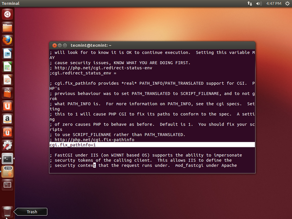Usamos el repositorio PPA (Archivo de paquetes personales) propio de Cherokee, así que agreguemos el ppa a su sistema y hagamos la actualización del sistema.
sudo add-apt-repository ppa:cherokee-webserver/ppa
sudo apt-get update
Una vez, PPA agregado, abra el terminal con Ctrl + Alt + T y escriba el comando desde el terminal. Le pedirá confirmación si desea instalar Cherokee Web Server. Escriba "Sí" para continuar.
sudo apt-get install cherokee
Una de las características agradables de Cherokee Web Server es su panel de control de administración basado en la Web desde donde puede administrar su servidor Web. Comando de fuego ‘cherokee-admin’ se iniciará un nombre de usuario y contraseña que se utilizarán más adelante (copie la contraseña en el portapapeles). Por defecto, el servidor web Cherokee está vinculado al host local (127.0.0.1) o la dirección IP del sistema (xx.xx.xx.xx) en el puerto no 9090. En mi caso sería algo así como http://10.0.2.15:9090 /.
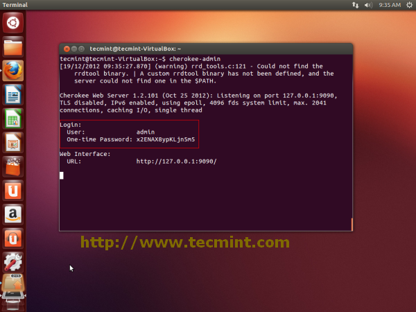Ahora, abra el navegador y escriba http://127.0.0.1:9090/ o http://10.0.2.15:9090/ en la barra de direcciones. Cuando se le solicite, proporcione el nombre de usuario "admin", pegue la contraseña que se copió anteriormente durante el comando cherokee-admin . Así es como se ve la interfaz web y el funcionamiento de Cherokee Web Server.
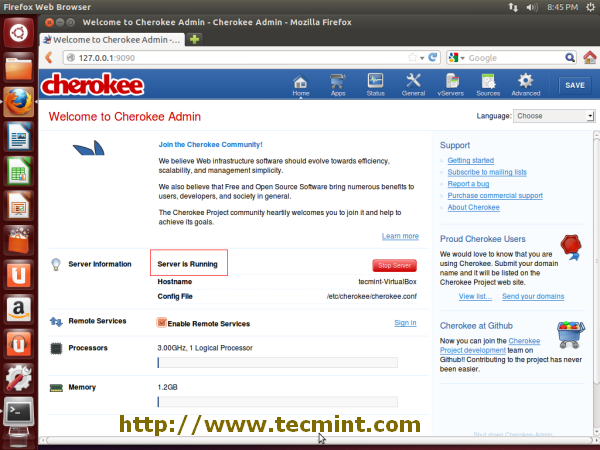Cómo iniciar, detener y verificar el estado de Cherokee Web Server. También para verificar que cherokee-admin y Web Server se estén ejecutando.
/etc/init.d/cherokee status
/etc/init.d/cherokee stop
/etc/init.d/cherokee start
/etc/init.d/cherokee restart
sudo netstat -antp | grep cherokee
Para dejar de ejecutar cherokee-admin, presione CTRL + C en la terminal o use el siguiente comando.
sudo killall -TERM cherokee-admin
Por defecto, el soporte PHP5 no está habilitado en Cherokee. Necesitamos habilitarlo manualmente yendo al panel de control de administración de Cherokee en //10.0.2.15:9090/
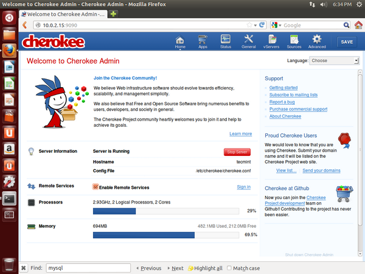Vaya a vServers, seleccione el vhost predeterminado y luego vaya a la pestaña Behavior y ejecute Rule Management.
En la columna de la izquierda, verá una lista de reglas disponibles. Vea la imagen a continuación para su referencia.
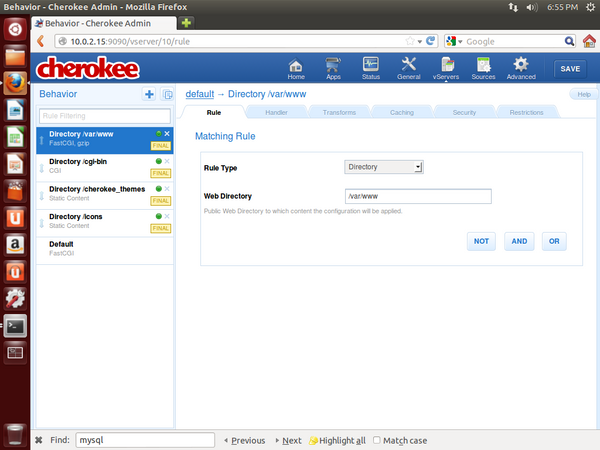Haga clic en el icono "+" junto a la pestaña Comportamiento que dice "Agregar regla de comportamiento".
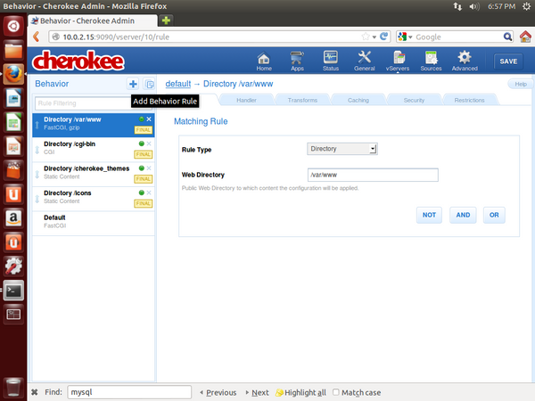Seleccione "Idiomas" en la columna de la izquierda, luego elija PHP y presione el botón "Agregar".

continuación, haga clic en el botón Crear en la ventana Asistente de configuración.
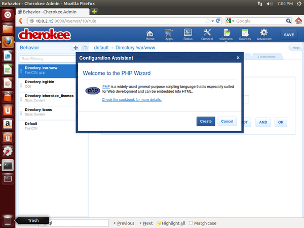Se agregó una nueva regla a la columna de la izquierda que dice "Extensiones php" con estado "NO FINAL". Haga clic en "NO FINAL" y conviértalo en "FINAL".
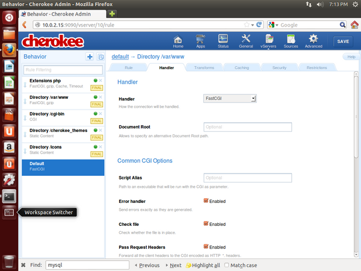A continuación, en la esquina superior derecha, verá el botón "GUARDAR", haga clic en él para guardar la configuración.
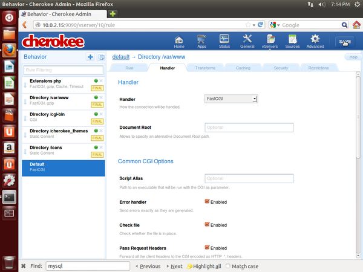Ahora reinicie el servidor web Cherokee para realizar nuevos cambios.
/etc/init.d/cherokee restart
A continuación, vaya a vServers, en la pestaña Comportamiento, verá que PHP está habilitado.
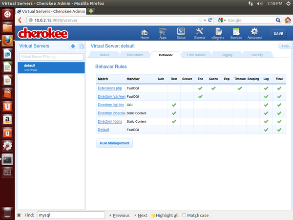El directorio raíz web predeterminado para el sitio web es /var/www. Debajo de este directorio, cree un archivo llamado phpinfo.php
nano /var/www/phpinfo.php
Agregue las siguientes líneas de código y guarde el archivo.
- ?php
- phpinfo();
- ?>
A continuación, llame al archivo en el navegador como http://10.0.2.15/phpinfo.php
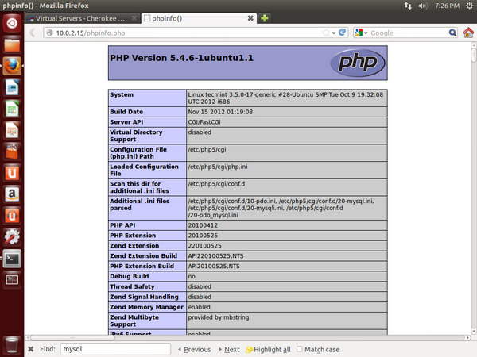Vea la figura anterior, verá que PHP5 está habilitado con soporte FastCGI con otros módulos por carga, pero falta una cosa en la lista (es decir, MySQL). Todavía no hemos agregado la compatibilidad con MySQL para PHP5. Vamos a hacerlo.
ara habilitar el soporte de MySQL para PHP, instale el paquete php5-mysql con otros módulos php importantes que puedan ser necesarios para sus aplicaciones.
sudo apt-get install php5-mysql php5-gd php5-curl php-pear php5-imagick php5-memcache php5-xmlrpc php5-xsl
A continuación, reinicie el servidor web Cherokee.
/etc/init.d/cherokee restart
Actualice el navegador http://10.0.2.15/phpinfo.php y busque mysql, obtendrá una sección MySQL con una lista de otros módulos.
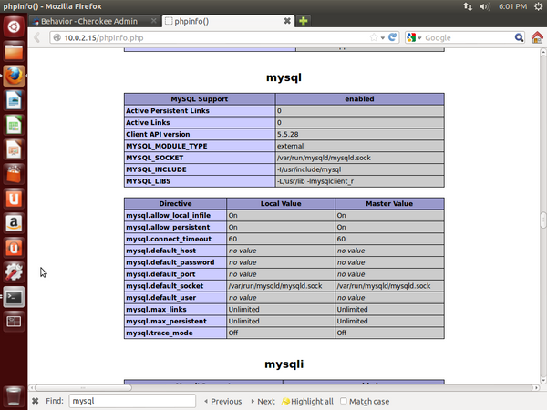